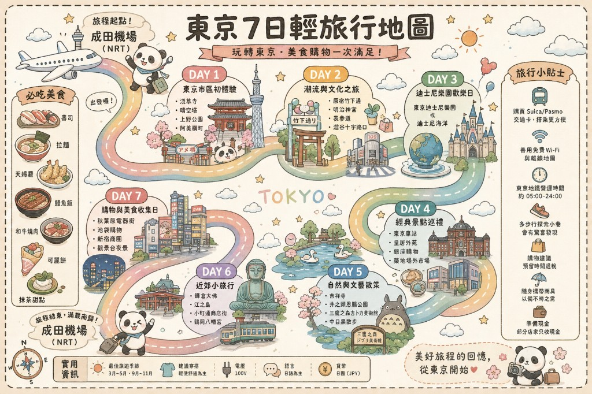
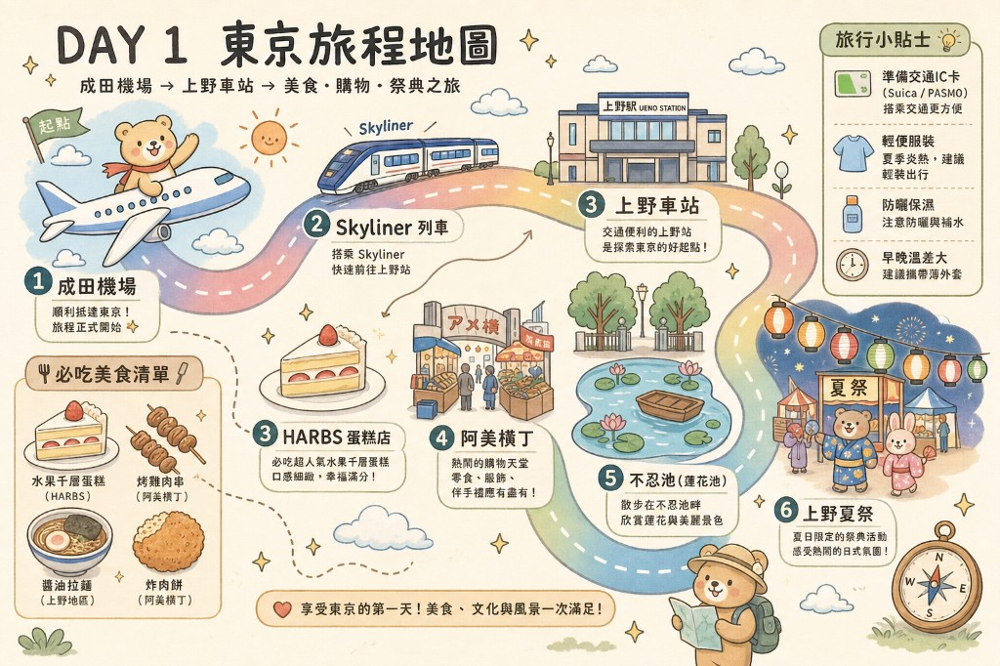
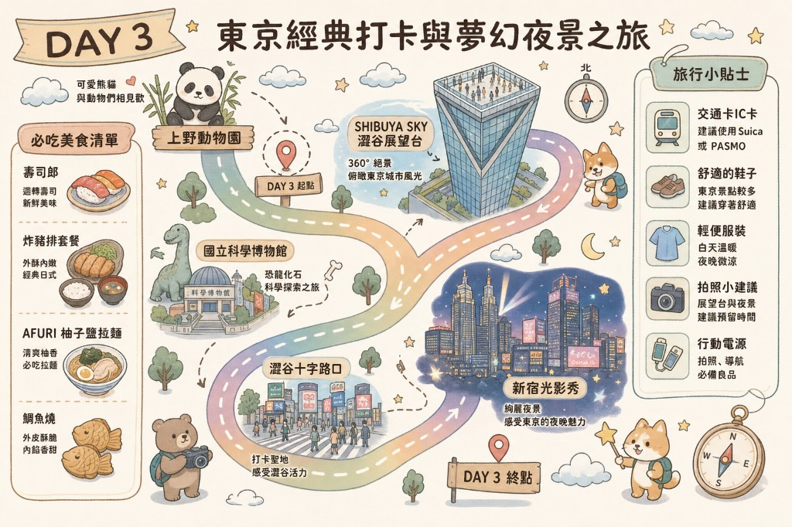
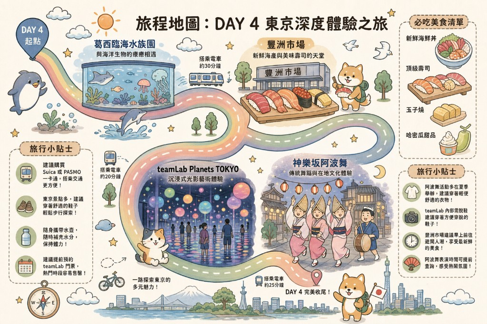
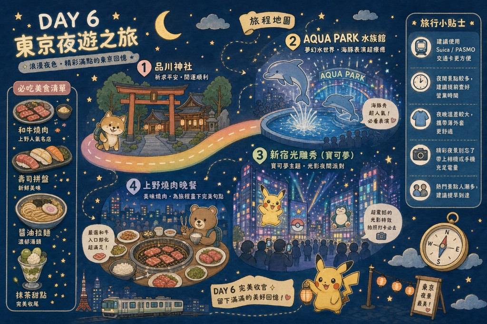

① 行前必讀：入境・海關・必辦
🛂 入境日本：Visit Japan Web（強烈建議出發前完成）
2026 年日本入境主要走 Visit Japan Web（VJW）線上預先登錄，現場掃 QR 走電子通關最快。
- 網址：vjw.digital.go.jp（出發前 1～2 週註冊帳號、填好）
- 需登錄：入境審查（外國人入境記錄） + 海關申報（攜帶品申報）。完成後各產生一個 QR Code。
- 需準備：護照、班機資訊、在日住宿地址電話（填上野飯店 Hotel Crown Hills Ueno Premier 地址即可）。
- 現場：先掃「入境審查」QR + 拍照按指紋 → 領行李 → 過海關掃「海關申報」QR。
- 備援：若 VJW 當機，仍可填寫紙本「入境卡 + 海關申報單」（機上空服員會發，建議拿一份備用）。
※ 一家人可在同一帳號下建立多位同行家屬資料，小孩也要各自登錄。
🧳 海關・行李・違禁品重點
- 免稅菸酒/購物額度：酒 3 瓶、紙菸 200 支（合理個人用量內免稅）。一般家庭購物不會超標。
- 嚴禁攜入：新鮮肉品/肉製品（含真空包裝肉鬆、含肉泡麵調理包風險）、新鮮蔬果、部分種子。台灣肉乾/貢丸/含肉零食不要帶。
- 藥品：個人用成藥沒問題；處方藥多帶（>1 個月量）需「薬監証明」，一般旅遊用量免。
- 現金申報：攜帶等值 ¥100 萬以上現金需申報。
- 回台：日本買的水果、生鮮肉品同樣不能帶回台灣；藥妝/食品/電器 OK。台灣入境免稅額 NT$2 萬、菸酒有限量。
📶 上網 / 網路（出發前先買）
- 最省心：eSIM（如 Airalo / Ubigi / 各大電信日本上網 eSIM），落地自動連線，免換卡。iPhone XS 以後皆支援。
- 多人共用：一台 WiFi 分享器（Klook/KKday 機場領取或宅配台灣）給全家共用最划算。
- 建議流量：每人 7 天 5–10GB；重度導航/影片選吃到飽。
- 機場有免費 Wi-Fi 但不穩，不要靠它過 VJW 通關。
💴 現金・支付・匯兌
- 東京八成場所可刷卡/嗶手機，但祭典屋台、阿美橫町小攤、部分老店只收現金，務必帶足現金（建議每人備 ¥2–3 萬零用 + 全家共同基金）。
- 換匯：台灣端先換好日幣較佳；不足時用日本 7-11 ATM / 郵局 ATM 領現（海外提款手續費 + 設好磁條/晶片提款功能）。
- 支付主力：iPhone 綁定 Suica（見下節），搭車購物嗶一下最快。
- Visa/Master 信用卡保留一張（樂園、水族館、飯店押金用）。
⚠️ 原行程「不足/要補」的重點檢查（我幫你抓出來）
- Day3 澀谷 SKY 必須提前 28 天搶日落黃金場（16:30–17:00），否則只剩白天或很晚的場（見訂位清單）。
- Day4 / Day5 都用到 teamLab Planets → 你只會去一次，請二選一（建議放 Day4，因 Day4 動線豐洲市場→teamLab 最順）。Day5 行程本身沒排 teamLab，OK，但別重複買票。
- Day5 隅田川花火（7/25 六）= 全東京最擠的一天：晴空塔商場、淺草押上站會交通管制。務必照原行程「步行回上野」，且 17:00 後少喝水、先上廁所、先卡好野餐位。雨天備案見緊急章節（花火遇荒天當天上午 8 點才宣布是否中止）。
- Day2 八景島是私鐵（金澤海岸線 Seaside Line），Suica 可刷；One Day Pass 現場/官網買。確認當日海豚秀時間再排。
- 豐洲市場壽司大/大和壽司清晨開賣、中午多半已收：你 Day4 中午到，壽司大未必還營業，請以「海鮮丼/定食」店為主力（已在 Day4 補 3 備案）。
- Day3 邁泉炸豬排青山本店、Day3/Day1 HARBS：熱門店午餐尖峰要嘛訂位、要嘛 11:00–11:30 前到。
- 7 月底東京 33–36°C + 高濕：每段戶外行程都要排「室內冷氣避暑點」，手持風扇、涼感巾、補水鹽錠必備（打包章節）。
- Skyliner 回程（Day7）建議 Day6 晚上先在京成上野站劃位買好（原行程已提，讚）。
- 小孩入居酒屋：鳥貴族/大山/大統領晚間菸味/酒客多，帶小孩建議坐早場或選定食店。
② 交通票券分析（含 vs 單次購票試算）
理由：你全程在東京 23 區 + 橫濱/八景島來回，沒有跨城長途；而且每天都混用 JR + 東京地鐵 + 都營 + 私鐵（京成/東武/金澤海岸線），任何單一公司的 Pass 都無法覆蓋，硬買反而被綁死又更貴。
各票券比較表（價格・範圍・是否推薦）
| 票券 | 價格 | 使用範圍 | 本行程推薦? |
|---|---|---|---|
| Suica / PASMO（實體或 iPhone 綁定） | 儲值制，無票價；iPhone 綁定免押金，實體卡 ¥500 押金 | JR、地鐵、都營、私鐵、巴士、便利商店、自販機通通能嗶 | ✅ 主力，全程用它 |
| Welcome Suica（觀光客版） | 免押金、效期 28 天 | 同 Suica | ○ 沒 iPhone 綁卡時的實體替代 |
| 京成 Skyliner 來回票 | 來回約 ¥4,480（單程 ¥2,580；常有 Klook/KKday 折扣 ~¥4,300） | 京成上野 ⇄ 成田機場 直達 41 分 | ✅ 單獨買來回，最省機場往返時間 |
| JR Pass 全國版 | 7 日約 ¥50,000 | 全日本 JR | ❌ 沒跨城，完全浪費 |
| JR 東京都市地區通票（都區內 Pass） | ¥760/日 | 東京 23 區內 JR 普通車一日無限 | △ 只有 Day2/Day6 大量純 JR 移動的日子「可能」打平，但你還要搭地鐵/私鐵，不划算（見下試算） |
| Tokyo Subway Ticket（24/48/72h） | ¥800 / ¥1,200 / ¥1,500 | 只含東京 Metro + 都營地鐵，不含 JR、不含私鐵 | △ 你 JR 用很兇，覆蓋不足；除非某天幾乎只搭地鐵（見 Day3 備案A/B） |
※ Skyliner 也可考慮「Skyliner + Tokyo Subway 24h 套票」，但你只有 Day3 偏地鐵，整體仍是 Suica 單嗶最彈性。
🧮 票券 vs 單次購票 試算（為什麼選 Suica）
各日地鐵/JR 嗶卡實際花費（估，IC 票價，單位日圓/人）：
- Day1：Skyliner 單程 2,580（來回票攤一半）+ 市區步行為主 → 當日約 ¥2,580
- Day2：上野⇄八景島來回 + Seaside Line ≈ ¥1,800–2,000
- Day3：上野⇄澀谷⇄新宿（光雕秀）⇄上野，混 JR/地鐵 ≈ ¥600–800
- Day4：上野→葛西臨海→豐洲→飯田橋（神樂坂）→上野 ≈ ¥900–1,100
- Day5：上野⇄晴空塔（東武）+ 步行 ≈ ¥600
- Day6：上野⇄品川⇄新宿（光雕秀）⇄上野 ≈ ¥900–1,100
- Day7：Skyliner 單程 2,580（來回票另一半）→ 約 ¥2,580
👉 若改買 Subway Ticket 72h（¥1,500），你 Day2/Day4/Day6 的 JR 段全不能用，仍要另付 JR，等於「白花 ¥1,500」。Suica 嗶卡 = 花多少算多少，最省。
7 日交通總計（含 Skyliner 來回）≈ ¥10,000–11,500 / 人（約 NT$2,100–2,400）
📲 iPhone 綁定 Suica 步驟（出發前先設好）
- iPhone「錢包 App」→ 右上「＋」→ 選「交通卡」→ Suica。
- 用 Apple Pay（綁 Visa/Master）儲值，例如先充 ¥3,000。
- 過閘門時整支手機靠感應區即可（快捷交通卡開啟後免解鎖、免開 App）。
- 沒電也能嗶（iPhone XS 以上有電力儲備感應）。家裡每人一支手機各綁一張。
- 沒 iPhone 的家人：機場/車站買實體 Welcome Suica。
③ 訂位 / 預約 / 報名清單（按急迫度排序）
🔴 必須提前搶（行程確定立刻訂）
| 項目 | 提前多久 | 怎麼訂 | 備註 |
|---|---|---|---|
| 澀谷 SKY（Day3） | 參觀日 28 天前日本時間 00:00 開賣 | 官網 / Klook / KKday | 想要日落+夜景 16:30–17:00 場，開賣秒殺，定鬧鐘搶 |
| teamLab Planets 豐洲（Day4，二選一） | 至少 1 個月 | 官網 指定時段電子票 | 涉水體驗，穿短褲/可捲褲管；旺季易售完 |
| 墨田水族館（Day5） | 1–2 週，至少前一晚 | 官網 / Klook 掃 QR 入場 | 花火日人潮爆，先買省排隊 |
| 八景島 One Day Pass（Day2） | 建議前一晚線上 | 官網 / KKday | 確認當日海豚秀場次再排 |
🟡 建議先預約的餐廳（熱門/家庭優雅）
| 餐廳 | 哪天 | 訂位方式 | 最熱門時段 |
|---|---|---|---|
| 邁泉炸豬排 青山本店（まい泉） | Day3 備案C 午餐 | 官網 / TableCheck / Tabelog，建議提前 1–2 週；否則 11:00–11:30 前到排隊 | 12:00–13:30 |
| 敘敘苑 / 燒肉陽山道 上野 | Day2備案B / Day6 晚餐 | 電話或 Hot Pepper / 一休；週末晚先訂 | 18:00–20:00 |
| 高輪格蘭王子 Lounge Momiji 下午茶 | Day6 下午茶 | 官網 / 一休預約 | 14:00–16:00 |
| T.Y.HARBOR（天王洲運河） | Day6 午餐備案 | 官網 / TableCheck | 午餐 12:00 假日要訂 |
| 迴轉壽司 壽司郎 / 魚べい（澀谷） | Day3 晚餐 | 各自官方 App 抽號（切日本地區或用網頁版）；現場排常 >1hr | 18:00–20:00 |
🟢 現場即可（不收訂位 / 排隊制）+ 體驗報名
- HARBS 上野、Park Side Cafe、ecute 上野、豐洲千客萬來、壽司大/大和壽司、晴空塔 Toriton：現場排隊制，靠「提早到 / 派人先排」。
- 寶可夢光雕秀（都廳）：免費、免預約、直接去都民廣場站著看（Day3、Day6）。
- 祭典（上野夏祭/神樂坂阿波舞/隅田川花火）：免報名，免費入場（花火付費觀覽席才需 5/10 起搶協贊席，自由區免費）。
- 想加的體驗：和服體驗（淺草）建議線上預約（VASARA / 七緒），夏天可選浴衣，剛好配祭典（Day5 晴空塔/淺草、或 Day1 上野）。茶道體驗多在淺草/銀座，提前 3–7 天網路報名。
④ 🟡 寶可夢光雕秀 ×2（已幫你插入 Day3 平日 + Day6 週末）
📍 東京都廳第一本廳舍 東側壁面 ／ 觀賞點：都民廣場（新宿區西新宿 2-8-1）
💴 完全免費、免預約，原則上每天上映（荒天中止）
🕖 7 月夏季場次：19:30 / 20:00 / 20:30 / 21:00 / 21:30（每場約 15 分，最後約 21:45 結束）
🚇 最近站：都營大江戶線「都廳前站」直結；或 JR「新宿站」西口走 ~10 分
🔗 當日 TIMETABLE / 即時音樂：tokyoprojectionmappingproject.jp
Day 1｜7/21(二) 抵達・上野下午茶・夏日祭典

🕒 時間表 + 交通路線
12:25 成田機場 T1/T2 入境、領行李、過海關（VJW 掃碼）。
↳ 抓 90 分鐘緩衝：入境＋領李＋買 Skyliner 票，14:00 前上車合理。
~13:30 京成 Skyliner：成田機場站 → 京成上野站，直達不轉車 41 分，¥2,580（建議買來回 ¥4,480）。
↳ Skyliner 對號座，行李架夠大。
14:30 京成上野站步行 5–8 分 → 飯店 Check-in / 寄行李。
15:00 下午茶 HARBS 上野店（PARCO_ya 2F，飯店步行 5–10 分）。
16:30 阿美橫町逛街（步行 5 分）。
18:00 上野恩賜公園 & 不忍池散步（賞夏季蓮花）。
18:45 晚餐（見下）。
19:30 うえの夏まつり（不忍池水上音樂堂周邊屋台、燈籠）。
21:00 步行回飯店。
本日交通全程步行（飯店↔PARCO_ya↔阿美橫町↔不忍池皆 5–15 分）。
🍽️ 三餐 ×3 備案
下午茶① HARBS 上野店（ハーブス）PARCO_ya 2F
- 地址：台東区上野3-24-6 PARCO_ya 2F｜最近站：JR/地鐵 上野・御徒町｜Maps 關鍵字：
HARBS PARCO_ya 上野 - 必點：水果千層 Mille Crepes + 熱紅茶｜約 ¥1,500–2,000/人
- 規定：每人低消一杯飲品（蛋糕不計低消）；平日午後仍可能小排，翻桌快。不收訂位。
替代：② 廚 otto e sette（少觀光客的甜點） 或 ③ 上野 みはし（あんみつ蜜豆冰，在地老店）本店 上野公園口前，夏天吃白玉餡蜜超消暑，¥800–1,200。
晚餐① 鳥貴族 上野店（均一價串燒居酒屋）
- 全品均一價（約 ¥360 前後）｜¥1,500–2,000/人｜現場候位｜帶小孩建議坐早場、靠角落。
② 在地推薦・少觀光客：とんかつ 山家（やまべ）御徒町 — 排隊在地炸豬排，份量大 CP 高，¥1,000–1,500，不訂位，Maps：とんかつ山家 御徒町。
③ 親子安全牌：阿美橫町「みなとや」/ 海鮮丼小店 or 一蘭/天丁屋天婦羅，¥1,000–1,800，現場排。
屋台小吃（炒麵/章魚燒/蘋果糖）可在夏祭直接解決晚餐，¥1,500 內吃飽，記得帶現金。
💴 Day1 預算（/人）
＋阿美橫町零食/藥妝視採買另計。
Day 2｜7/22(三) 橫濱八景島海洋之夢（雙備案傍晚）

⏰ 營業時間與設施維修注意事項
- 全島開放時間：08:30 – 21:30（入島免費）
- 水族館區 (Aqua Resorts)：10:00 – 20:00（暑假期間通常會延長營業，最終入館為閉館前 30 分鐘）
- 遊樂設施 (Pleasure Land)：11:00 – 20:00
- ⚠️ 維修與停駛注意：
- 遊樂設施（如波浪雲霄飛車、急流泛舟）若遇強風、大雨或雷雨會隨時暫停營運。
- 各設施的「定期保養點檢日」通常會在前一個月於官網公佈。強烈建議出發前下載「八景島官方 APP」，APP 內不僅有即時 GPS 園區地圖與 AR 導航，還能看到當天所有設施的即時排隊等待時間與維修停開狀況。
🗺️ 推薦遊玩順序與詳細攻略表
| 時間 | 推薦行程與設施 | 攻略與排隊注意事項 |
|---|---|---|
| 08:30 - 10:00 | 【交通與入園】 上野出發 → 八景島站 | 搭乘 Seaside Line 抵達。入島後先去售票處或自動取票機，將 Klook/KKday 買好的 QR Code 換成「一日通票手環」。(預估排隊：10-15分) |
| 10:00 - 11:30 | 【水族博物館 Aqua Museum】 必看：5萬隻沙丁魚幻覺舞 | 這是全日本最大水族館。10:30 有沙丁魚燈光秀，請於 10:15 提早到 1F 或 2F 大水槽前卡位。看完後順著動線看北極熊與海象。 |
| 11:30 - 12:00 | 【海豚夢幻館 Dolphin Fantasy】 海底隧道拍美照 | 無屋頂的拱型水槽，陽光灑下非常夢幻。採走動式參觀，不需排隊，但等空景拍照約需 5-10 分鐘。 |
| 12:00 - 13:00 | 【午餐】Seafood & Grill YAKIYA 海鮮 BBQ 吃到飽 | ⚠️ 關鍵戰略：暑假 12:30 後餐廳會大排長龍，務必在 12:00 前入座！自己烤海鮮很有夏日感。若想吃快點，可改去旁邊的美食廣場吃拉麵。 |
| 13:00 - 14:00 | 【海洋動物表演秀】 地點：Aqua Stadium | ⚠️ 關鍵戰略：下午場次通常在 13:30，但暑假人多，13:00 就要進場找位子。前三排是「濕身區」，不想被海豚潑水請坐第四排以後。 |
| 14:00 - 15:30 | 【海洋親密館 Fureai Lagoon】 近距離看企鵝、摸海豚 | 入場需聽 5 分鐘規則解說。若想參加「跟水獺握手」或「摸小白鯨」，必須當天一早就在 AsoView 網站搶預約名額，現場無法加購。 |
| 15:30 - 18:00 | 【遊樂島 Pleasure Land】 玩戶外遊樂設施 | 下午稍涼適合玩戶外： 1. 波浪雲霄飛車 (衝出海面，排隊約 40 分) 2. 急流泛舟 (夏天必玩微濕，排隊約 40 分) 3. 海島觀覽塔 (吹冷氣看夕陽，排隊約 15 分) |
| 18:00 - 19:00 | 【晚餐與伴手禮】 海灣市場 Bay Market | 玩完設施後，到 Bay Market 買白鯨娃娃伴手禮，吃個可麗餅或簡單晚餐。 |
| 19:00 ~ | 【賦歸】 八景島 → 上野 | 避開閉園 21:00 的大散場人潮，提早搭車回上野飯店休息。 |
🚆 交通路線與傍晚備案
07:30 早餐：上野站 ecute / Andersen 麵包 外帶，車上吃。
去程：JR 上野站 →（京濱東北線 / 上野東京線）→ JR 橫濱站 →（JR 根岸線）→ JR 新杉田站 →（金澤海岸線 Seaside Line，Suica 可刷）→ 八景島站。約 75–90 分。
回程：18:00 後離開八景島，依體力二擇一：
備案 A（東京車站）：回新杉田 → 根岸線直通京濱東北線 → JR 東京站。19:30 拍紅磚站舍/廣場 → 東京車站地下街晚餐 → 東京一番街（寶可夢/吉卜力）→ JR 山手線回上野。
備案 B（直接回上野）：同一班車一路睡到 JR 上野站 → 飯店休息 → 阿美橫町（二木の菓子採買）→ 上野晚餐 → 回飯店。
💡 兩備案路線完全重疊，上車後再問家人決定在哪站下車。買多了紀念品 → 東京站置物櫃寄放再逛地下街。
🍽️ 三餐 ×3 備案
早餐① ecute 上野 Andersen 麵包＋咖啡；② Beck's Coffee（站內，早 7:00）熱壓三明治；③ 便利商店飯糰+關東煮（車上吃，¥500 內）。
午餐（園內）① 海鮮 BBQ（Bayside）；② 室內美食街丼飯/拉麵；③ 速食/輕食攤（帶小孩最快）。¥1,500–2,500/人。旺季中午排隊，11:50 前先卡位。
晚餐
備案 A 東京站地下街：① 東京拉麵街「六厘舍沾麵 / 斑鳩」；② 黑塀橫丁和食割烹；③ 大丸百貨 B1 デパ地下熟食外帶。¥1,500–2,500，現場排。Maps：東京ラーメンストリート。
備案 B 上野：① 燒肉陽山道（要訂）；② 大統領（阿美橫町鐵道下在地居酒屋，馬肉串知名，現場排）；③ とんかつ蓬莱屋（上野老字號炸豬排，少觀光客，¥2,000，不訂位）。
💴 Day2 預算（/人）
※ 八景島 Pass 大人約 ¥5,600、兒童約 ¥4,000，依官網。只想看水族館可買單館券省錢。
Day 3｜7/23(四) 三備案 ＋ ⭐平日寶可夢光雕秀

備案 A：上野在地知性 + 澀谷夜景（最省力）
09:30 上野動物園（飯店步行 10–15 分）。
13:00 國立科學博物館（動物園出口步行 5 分）。
15:30 地鐵 銀座線 上野→澀谷（28 分，上野是起點易有座）。
16:30 澀谷 SKY（Scramble Square 頂樓，直達電梯）。
18:30 晚餐（澀谷迴轉壽司，見下）。
20:00 MEGA 唐吉訶德澀谷（步行 5–8 分）。
⭐ 20:40 JR 澀谷→新宿（6 分）→ 都民廣場看 21:00/21:30 寶可夢光雕秀。
~22:00 新宿→上野（JR 山手線約 25 分）回飯店。
備案 B：豐洲 teamLab + 葛西水族園 + 東京鐵塔
⚠️ 此備案的 teamLab 與 Day4 teamLab 重複，二擇一。若選此案，Day4 就不要再排 teamLab。
08:45 上野→有樂町→（有樂町線）豐洲（~25 分）→ teamLab Planets。
12:00 豐洲千客萬來午餐。14:00 豐洲→新木場→（JR 京葉線）葛西臨海公園（~15 分）水族園。
17:00 京葉線→八丁堀→（日比谷線）神谷町（~25 分）→ 東京鐵塔。
⭐ 若要光雕秀：鐵塔後改 日比谷線→霞ケ関→丸ノ内線→新宿，看 21:00/21:30 場，再回上野。（不看則 21:00 日比谷線直達上野）
備案 C：明治神宮 + 表參道 + 澀谷雙塔夜景（經典打卡）
08:30 JR 上野→（山手線內環）原宿（~28 分）。09:00 明治神宮。
13:30 表參道/貓街步行至澀谷（30–40 分）。16:30 澀谷 SKY。
⭐ 19:30 澀谷→新宿都民廣場看 19:30/20:00 寶可夢光雕秀 → 晚餐新宿 → 回上野。
（原案的東京鐵塔可省，光雕秀替代夜景；想兩個都要則光雕秀看完再轉赤羽橋看鐵塔較趕，建議擇一）
🍽️ 三餐 ×3 備案
早餐① 飯店；② ecute 上野麵包；③ 原宿/澀谷 站前咖啡（備案C 路上）。
午餐
① Park Side Cafe（上野公園內，備案A）— 露台景觀，¥1,500–2,500，不訂位、11:30 前到。Maps：パークサイドカフェ 上野。
② 邁泉炸豬排 まい泉 青山本店（備案C，少觀光客的本店）— 炸豬排三明治/里肌定食，¥1,800–3,000，強烈建議 TableCheck 提前 1–2 週訂位，否則 11:30 前排。
③ 豐洲千客萬來海鮮丼（備案B）— 現場排，¥2,000–3,500。
晚餐（澀谷）
① 魚べい（Uobei）澀谷道玄坂 — 平板點餐、軌道送餐，小孩超愛，¥1,000–1,800，App 抽號。
② 壽司郎 澀谷 — 同上，App 抽號。
③ 在地推薦・少觀光客：つけ麵 五ノ神製作所 / 鳥升（澀谷在地居酒屋）；或新宿光雕秀後吃 新宿 思い出橫丁（回憶橫丁）串燒，¥1,500–2,500。
💴 Day3 預算（/人，以備案A估）
光雕秀免費。備案B/C門票/餐費略高（teamLab ¥3,800、東京鐵塔大瞭望台 ¥1,200）。
Day 4｜7/24(五) 葛西水族園・豐洲市場・teamLab・神樂坂阿波舞

🕒 時間表 + 交通路線
08:30 上野出發。
路線：JR 上野→（京葉線方向，經東京站轉京葉線）葛西臨海公園站。（或上野→八丁堀→京葉線）
09:30–11:30 葛西臨海水族園（谷口吉生玻璃圓頂，鮪魚迴游缸）。
11:30 葛西臨海公園→（京葉線）新木場→（有樂町線）市場前站 / 豐洲，~20–30 分。
12:00–13:30 豐洲市場午餐（見下）。
14:00–16:00 teamLab Planets（市場步行 10–15 分或百合鷗線一站）。涉水消暑。
16:30 有樂町線直達 飯田橋站（~20 分）→ 神樂坂。
17:30 神樂坂散步 + 晚餐。
19:00–21:00 神樂坂まつり 阿波舞大會（注意：阿波舞通常在 7 月下旬週五六，出發前查當年確切日期，若非 7/24 則改安排其他夏祭或晴空塔）。
🍽️ 三餐 ×3 備案
早餐① 飯店；② 上野站便利商店車上吃；③ 葛西臨海公園站前輕食。
午餐（豐洲市場）
⚠️ 壽司大/大和壽司清晨開賣，中午多半已賣完/收攤，別硬等。以下以「中午仍營業」為主：
① 仲家（Nakaya）海鮮丼 — 食材堆疊如珠寶盒、上菜快，¥2,500–3,500，現場排。
② 天房（天婦羅）/ 八千代（炸物定食） — 市場老店，¥2,000–3,000，現場排。
③ 寿司大 / 大和寿司（若還在排得到）— 頂級握壽司 ¥4,000–6,000，需早到、輪流排。
備援：管理設施棟 1F 任何掛「海鮮丼/定食」招牌的店，職人等級不踩雷。Maps：豊洲市場 管理施設棟 飲食。
晚餐（神樂坂，少觀光客的法日小巷）
① 茶寮 / 神樂坂 鳥茶屋（親子丼・烏龍壽喜燒） — 老舖氛圍，¥2,000–3,500，建議電話/網路訂位。
② 神樂坂 蕎麦（手打蕎麥） — 清爽，小孩友善，¥1,200–2,000，現場。
③ 法式小酒館（神樂坂法國村） — 想吃好一點，¥3,000+，假日/祭典日務必訂位。
祭典當晚也可直接吃屋台炒麵/烤雞串解決。
💴 Day4 預算（/人）
Day 5｜7/25(六) 晴空塔科技・墨田水族館・🎆隅田川花火

🕒 時間表 + 交通路線
08:00–09:00 早餐（飯店 / 上野站 Doutor）。
路線：上野→（地鐵銀座線）淺草→（東武晴空塔線 1 站）東京晴空塔站 / 押上，~15 分，出站直結商場。
09:30–11:30 晴空塔 8F 千葉工業大學展示區（免費，機器人/女武神模型）＋ 9F 郵政博物館（大人¥300）。
12:00–13:30 午餐 Solamachi（見下，11:00 前取號）。
13:30–16:00 墨田水族館（5F/6F，企鵝/水母，先網路購票掃 QR）。
16:00–17:30 步行至隅田公園屋台街卡位（10–15 分）。
19:00–20:30 🎆 隅田川花火大會。
~20:40 沿淺草通步行回上野（約 30 分），避開管制人潮。
🌅 上午備案（二擇一，皆可接 12:00 晴空塔午餐）
備案一・國立科學博物館（上野公園內步行即達，恐龍/工業史，冷氣強）09:30–11:30 → 地鐵到晴空塔。大人 ¥630，高中以下免費。
備案二・淺草文化觀光中心 + 隅田川晨散（隈研吾設計，頂樓免費展望台俯瞰仲見世+晴空塔合照）→ 步行過隅田川到晴空塔。免費。
🍽️ 三餐 ×3 備案
早餐① 飯店；② 上野站 Doutor/Egg's Thing 鬆餅；③ 便利商店。
午餐（晴空塔 Solamachi）
① 迴轉壽司 トリトン Toriton（6F，北海道直送高 CP）— ¥2,000–3,000，11:00 前到取號最關鍵。Maps：回転寿司トリトン ソラマチ。
② 利久牛舌（6/7F）— 仙台牛舌定食，¥2,000–2,800，11:00 前進店免久候。
③ 美食街讚岐烏龍/炸豬排 — 最快，¥1,200–1,800。
晚餐（花火野餐）
🚫 切勿在花火當晚訂餐廳（管制+爆滿）。建議：
① Solamachi B1 超市（Food Marche） 15:00 前買冷便當/壽司/飲料/水果，會場直接野餐。
② 沿途屋台：炒麵、章魚燒、蘋果糖、烤雞串（帶現金）。
③ 便利商店預購：御飯糰/炸雞/冰飲（會場附近超商會被掃空，提早買）。
💴 Day5 預算（/人）
Day 6｜7/26(日) 品川海洋聲光 ＋ ⭐週末寶可夢光雕秀(+哥吉拉)

🕒 時間表 + 交通路線
09:30 飯店步行至 JR 上野站。
10:00–11:30 晨間微調：JR 上野→（山手線）品川→（京急本線 1 站）北品川/新馬場 → 品川神社（雙龍鳥居、品川富士）+ 舊東海道品川宿商店街。
12:00–13:30 午餐（見下）。
13:30–16:00 Maxell Aqua Park 品川（日間海豚秀 Splash、水母牆、海底隧道、企鵝）。
16:00–17:30 下午茶：高輪格蘭王子 Lounge Momiji（日式庭園）或 天王洲 Isle 水岸漫步。
⭐ 18:00 JR 品川→新宿（~13–18 分）→ 都民廣場看 19:30/20:00 寶可夢+哥吉拉光雕秀。
~20:30 JR 新宿→上野（~25 分）。
20:45–21:30 上野晚餐 + 夜間購物（唐吉訶德 24h / Yodobashi 到 22:00）。
不想跑新宿的話，保留原案「夜間 Aqua Park 雷射海豚秀 18:00–19:30」→ 品川直達上野，光雕秀就只放 Day3 平日場。
🍽️ 三餐 ×3 備案
早餐① 飯店；② ecute 上野；③ 品川站 ecute 麵包（路上）。
午餐（品川）
① 品川王子飯店「味街道 五十三次」（家庭優雅，多選擇）¥2,000–3,500，建議訂位。
② Atre 品川「利久牛舌」（便捷）¥2,000–2,800，現場。
③ T.Y.HARBOR（天王洲運河畔，少觀光客、文青）精釀啤酒+美式，¥3,000+，假日訂位。Maps：T.Y.HARBOR 天王洲。
晚餐（上野，週日 20:00 後零售多打烊→鎖定餐廳）
① 燒肉陽山道 / 敘敘苑 上野（犒賞，週日晚先訂位）¥3,000–5,000。
② 阿美橫町鐵道下「肉の大山 / 大統領」（在地居酒屋氛圍，現場）¥1,500–2,500。
③ 上野 Atre 商場餐廳（營業到 22:30）（舒適、選擇多）¥1,500–2,500。
💴 Day6 預算（/人）
光雕秀免費。省錢可跳過下午茶。
Day 7｜7/27(一) 上野晨散・返家

🕒 倒推時間表 + 交通
💡 Day6 晚上先在京成上野站買好/劃位 Day7 的 Skyliner，當天零壓力。
07:30–09:30 晨間行程（見備案）。
09:40 退房，步行至京成上野站。
10:20 或 10:40 Skyliner 出發（41–45 分）。
11:05 或 11:25 抵成田，報到托運。
13:25 起飛 🛫。
🌅 晨間 3 備案 + 早餐
① 上野公園晨散（最推）：不忍池 7 月荷花盛開（清晨最美）+ 國立科學博物館外巨大藍鯨模型 & D51 蒸汽火車頭（戶外免費打卡，週一休館不入內）。
② ecute 上野最後採買：8:00 開門麵包/伴手禮/扭蛋（企鵝小物）；二木の菓子 10:00 開（時間緊只能快閃）。
③ 日式朝食：PRONTO / Beck's（7:00 開）厚片吐司+黑咖啡；或 24h「名代 富士そば」熱湯蕎麥+溫泉蛋。
早餐 3 選① ecute Andersen；② 富士そば（24h，¥500）；③ 飯店早餐。¥500–1,000。
💴 Day7 預算（/人）
⑤ 省錢攻略
🆓 免費景點 / 展望台
- 都廳南/北展望台（新宿，免費夜景，看完光雕秀順路）；都民廣場光雕秀本身免費。
- 晴空塔 8F 千葉工大展示區（免費）；淺草文化觀光中心頂樓展望台（免費）。
- 上野恩賜公園、不忍池、明治神宮、品川神社、東京車站丸之內廣場、天王洲水岸——皆免費。
- 三大夏祭（上野夏祭、神樂坂阿波舞、隅田川花火自由區）——免費入場。
🎟️ 優惠券 / 折扣哪裡拿
- 門票：Klook / KKday 常比官網現場便宜（八景島、teamLab、墨田水族館、Aqua Park、澀谷 SKY），且可掃碼免排隊。
- 唐吉訶德/Bic/Yodobashi 出示護照免稅 8–10% + APP/官網優惠券再折。藥妝店（松本清等）滿額免稅 + 折價券。
- 觀光案內所、機場、飯店大廳常有免費 coupon book。
💡 省錢小技巧 / 旅遊陷阱
- 超市撿便宜：晚上 19:00 後 デパ地下/超市熟食、便當貼「半額/割引」黃標，當宵夜超划算（Day2/Day5 適用）。
- 午餐比晚餐便宜：同店午間定食（ランチ）常比晚餐省 30–40%，把好料安排在中午。
- 便利商店好物：唐揚雞、おでん關東煮、明治牛奶、各式布丁、急凍冰品，早餐宵夜都靠它。
- 陷阱：① 阿美橫町部分海鮮攤喊價要先問清總價；② 觀光區「無低消」茶屋仍可能加服務費；③ 居酒屋常有「お通し（強制小菜 ¥300–500/人）」，不是被坑是日本慣例；④ 計程車超貴，能搭電車就別搭。
⑥ 實用 APP 與工具
| 類別 | 推薦 | 用途 |
|---|---|---|
| 交通導航 | Google Maps + Japan Travel by NAVITIME / 乗換案内 | Google Maps 最直覺；NAVITIME 換乘月台/車資/首末班更準 |
| 翻譯 | Google 翻譯（下載日文離線包+相機即時翻譯）、Papago | 菜單、藥妝成分拍照翻 |
| 訂位 | Tabelog（食べログ評分）、Hot Pepper、一休（高檔）、TableCheck | 查評分/訂位；部分需日本手機，用網頁版或請飯店代訂 |
| 票券 | Klook / KKday | 景點電子票、Skyliner、WiFi |
| 天氣 | tenki.jp、Yahoo!天気、Windy（雷雨）、花火官方「雨雲ウォッチ」 | 夏季午後雷陣雨判斷 |
| 匯率 | XE Currency | 即時日圓/台幣 |
| 支付 | iPhone 錢包（Suica） | 交通+小額購物 |
⑦ 行李打包（7 月東京 33–36°C、高濕、午後雷雨）
👕 衣物 / 👟 鞋
- 透氣排汗短袖 T、薄襯衫；快乾材質為主（會狂流汗，每天 1 套換洗）。
- 薄長袖外套/開襟衫：水族館、博物館、電車冷氣超強，室內外溫差大（小孩必備防感冒）。
- 祭典可帶/現場租浴衣（Day5 超應景）。
- 鞋：好走透氣的運動鞋/慢跑鞋（每天走 1.5 萬步以上），加一雙涼鞋（teamLab 涉水穿短褲+赤腳，現場有置物）。
- 防曬：太陽眼鏡（澀谷 SKY 頂樓禁帶傘/帽，必備墨鏡）、防曬乳、薄帽（戶外用）。
🔌 電子 / 💊 藥品 / 🎒 小物
- 電子：日本電壓 100V、插座與台灣相同（雙平腳）免轉接，但若帶歐規/英規裝置才需轉接頭；行動電源（手機導航+拍照超耗電，每人 1 顆）；多孔 USB 充電器、傳輸線。
- 藥品：個人常備藥、腸胃藥、止痛退燒、OK 繃、暈車藥、防蚊液+止癢（公園/河邊蚊多）、電解質/鹽錠（防中暑）。
- 消暑：手持電風扇、涼感濕紙巾、保冷貼/退熱貼、折疊扇（Day5 戶外救命）。
- 雨具：折疊傘 + 輕便雨衣（午後雷陣雨來得快）。
- 其他：保溫/保冷水壺（隨時補水）、小毛巾（豐洲千客萬來 2F 免費足湯）、野餐墊（Day5 花火/夏祭）、夾鏈袋、購物袋（日本袋子要錢）。
🧳 行李箱空間
- 去程行李箱留 30–40% 空（藥妝/零食/玩具/伴手禮會爆量）。
- 帶一個可摺疊空包/大托特當回程加掛。
- Day6 把重的伴手禮排在上野飯店附近買（唐吉訶德/Yodobashi），免提著搭電車。
- 液體（化妝水/酒）走託運；行動電源、鋰電池只能手提上機。
⑧ 雨天 / 緊急備案
🌧️ 哪幾天怕雨 → 室內替代
| 原本怕雨的戶外段 | 室內備案 |
|---|---|
| Day1 上野公園/夏祭 | 改 PARCO_ya / 阿美橫町室內店家、上野的森美術館、晚祭縮短 |
| Day2 八景島戶外遊具 | 水族館本身全室內，遊樂設施雨天部分停開，專攻海族之館/海豚館；或直接走備案B回上野逛街 |
| Day3 明治神宮/表參道 | 切備案A（動物園室內館+科博全室內）或 B（teamLab/水族園/鐵塔皆室內） |
| Day5 花火 | 荒天當天 8:00 宣布中止。中止則改：晴空塔展望台、墨田水族館慢慢逛、Solamachi 購物、晴空塔 31F 展望咖啡看夜景 |
| Day6 品川神社/天王洲水岸 | Aqua Park 全室內、品川王子室內、Atre 品川購物 |
最不怕雨的天：Day2/Day4/Day5（水族館/teamLab/晴空塔皆室內）。怕雨優先動 Day1/Day3/Day6 的戶外段。
🔁 景點臨時關閉替代
- teamLab 售完/維修 → teamLab Borderless（麻布台）或墨田水族館。
- 澀谷 SKY 售完 → 東京鐵塔 / 都廳免費展望台 / Shibuya Hikarie Sky Lobby。
- 豐洲市場店休 → 葛西/築地場外市場（仍有壽司丼飯）。
- 動物園週一休 → 科博/上野之森美術館。
🏥 身體不適：藥局 / 診所
- 藥妝店（マツモトキヨシ松本清、サンドラッグ、ココカラ）幾乎滿街，可買成藥、口罩、貼布、退燒藥。
- 上野周邊醫院：永寿総合病院、東京都台東区周邊內科診所；急症撥 119（救護車/消防，免費）。
- 觀光客就醫求助專線：JNTO 24h 旅遊熱線 050-3816-2787（中/英/日/韓）。
- 保險：務必買旅平險+海外醫療（日本看診貴），留好保單與緊急聯絡。
- 緊急報案 110（警察）；台北駐日經濟文化代表處急難救助電話出發前記下。
⑨ 拍照打卡指南
📸 各景點最佳時間 / 角度 / 注意
- 都廳光雕秀（Day3/6）：都民廣場正面拍全幅；夜暗對比強，手機開夜間模式、靠欄杆穩拍。
- 澀谷 SKY（Day3）：日落前 30 分上樓拍藍調夜景最美；頂樓 禁帶傘/帽，注意手機防摔繩。SKY EDGE 邊角是 IG 熱點。
- 不忍池荷花（Day1/7）：清晨 6–8 點花最開、光最柔，弁天堂為背景。
- 明治神宮大鳥居（Day3C）：早晨人少順光；神宮內正殿前禁拍/脫帽，尊重參拜。
- 東京車站丸之內（Day2A）：傍晚點燈後紅磚+廣場倒影，KITTE 屋上庭園可俯拍站舍正面（免費）。
- teamLab（Day4）：水面倒影鏡像、垂直花朵房；建議穿深色短褲、避免裙子（地面為鏡），相機防水袋。
- 隅田川花火（Day5）：晴空塔+花火同框是經典，先卡西側河岸；手機開煙火/長曝模式、用小腳架。
- 品川 Aqua Park（Day6）：水母牆變色、海豚秀水花（前排會濕，相機防水）；夜間秀雷射場最華麗。
- 淺草觀光中心頂樓（Day5備案二）：仲見世+晴空塔一鏡到底，免費私房點。
通則：神社/寺廟正殿、部分店內、表演中可能禁拍；祭典拍人請禮貌。商店街拍照避免擋道。
⑩ 七日總預算（/人，估算）
| Day | 交通 | 門票/活動 | 餐食 | 小計(¥) | ≈NT$ |
|---|---|---|---|---|---|
| D1 | 2,580 | 0 | 3,800 | 6,380 | 1,340 |
| D2 | 1,900 | 5,600 | 4,200 | 11,700 | 2,460 |
| D3 | 700 | 3,730 | 4,500 | 8,930 | 1,875 |
| D4 | 1,000 | 4,500 | 5,500 | 11,000 | 2,310 |
| D5 | 600 | 2,800 | 4,500 | 7,900 | 1,660 |
| D6 | 1,000 | 2,500 | 8,000 | 11,500 | 2,415 |
| D7 | 2,580 | 0 | 800 | 3,380 | 710 |
| 合計 | 10,360 | 19,130 | 31,300 | ~60,790 | ~12,770 |
不含：機票、住宿、上網、保險、伴手禮/購物。小孩門票/餐費較低，整體會更省。預留 每人 +¥20,000 購物彈性金。
⑪ 行前 Checklist（出發前逐項打勾）
✅ 文件 / 預約
- ☐ 護照效期 6 個月以上、機票、住宿確認單
- ☐ Visit Japan Web 全員登錄完成（入境+海關 QR）
- ☐ 旅平險+海外醫療投保
- ☐ 澀谷 SKY 開賣日(參觀前28天)搶日落場
- ☐ teamLab Planets 指定時段票（提前 1 個月）
- ☐ 墨田水族館 / 八景島 / Aqua Park 電子票
- ☐ 邁泉青山本店 / 神樂坂 / 品川王子 / 上野燒肉 訂位（依選擇）
- ☐ 都廳光雕秀「寶可夢場次」官網 TIMETABLE 截圖（Day3/Day6）
- ☐ 確認 Day4 神樂坂阿波舞當年確切日期
✅ 票券 / 支付 / 網路
- ☐ iPhone 綁定 Suica 並儲值 ¥3,000+（每人）
- ☐ Skyliner 來回票（去程機場買 / 回程 Day6 晚先劃位）
- ☐ eSIM/WiFi 開通；換好現金（每人 ¥2–3 萬 + 共同基金）
- ☐ 信用卡可海外刷/提款
✅ 行李
- ☐ 薄外套（室內冷氣）、好走鞋、墨鏡、防曬
- ☐ 行動電源（手提）、充電器、轉接（如需）
- ☐ 手持風扇、涼感巾、退熱貼、鹽錠、防蚊
- ☐ 折疊傘+雨衣、水壺、野餐墊、購物袋
- ☐ 個人藥品；行李箱留 30–40% 空
⑫ 可直接貼進 AI 旅遊工具的 Prompt（生成 PDF/手機版）
推薦能直接生成可分享連結+PDF 的工具：Wanderlog、Mapify、Gamma；NotebookLM 可把本檔當來源問答。
請依以下資料，產出一份「手機友善、可下載 PDF」的東京 7 日親子旅遊行程說明書，需含目錄、可點選跳轉、每日時間表、交通路線（含車種/分鐘/車資）、每餐 3 個餐廳備案（含日文店名/地址/最近車站/營業時間/必點/價格/是否訂位）、門票與預約連結、每日與總預算（日圓+台幣）、省錢攻略、實用 APP、7 月打包清單、雨天/緊急備案、拍照打卡點、行前 Checklist。語言用繁體中文，匯率 ¥100≈NT$21。 【基本資料】 - 日期：2026/7/21(二)–7/27(一)，共 7 天；2 大人+小孩家庭 - 住宿全程：上野 Hotel Crown Hills Ueno Premier - 進出：去程 NRT 12:25 抵達；回程 7/27 班機 13:25 起飛 - 交通主力：iPhone 綁定 Suica 嗶卡；機場往返用京成 Skyliner 來回票（勿買 JR Pass/地鐵一日券，因混用 JR+地鐵+私鐵） 【每日主軸】 D1 上野：HARBS 下午茶→阿美橫町→不忍池→上野夏祭 D2 橫濱八景島海島樂園（水族館+遊樂設施），傍晚二擇一：東京車站地下街 或 直接回上野 D3（平日）三備案擇一：A 上野動物園+科博+澀谷SKY+唐吉訶德；B 豐洲teamLab+葛西水族園+東京鐵塔；C 明治神宮+表參道+澀谷SKY。★當晚加：澀谷→新宿都廳「寶可夢光雕秀(免費)」21:00/21:30 場→回上野 D4 葛西臨海水族園→豐洲市場午餐→teamLab Planets→神樂坂阿波舞祭（teamLab 全程只去這天一次） D5（週六）晴空塔千葉工大展示+郵政博物館→Toriton午餐→墨田水族館→隅田川花火大會(19:00-20:30)，花火野餐、步行回上野 D6（週末/週日）品川神社+舊東海道→品川午餐→Maxell Aqua Park品川(日間秀)→下午茶。★傍晚加：品川→新宿都廳「寶可夢+哥吉拉光雕秀(免費)」19:30/20:00 場→回上野晚餐+夜購 D7 上野公園晨散（不忍池荷花+科博戶外藍鯨/D51）→Skyliner→成田 【必含重點】 - 寶可夢光雕秀=都廳第一本廳舍東側/都民廣場，免費免預約，7月場次19:30/20:00/20:30/21:00/21:30，需查官網TIMETABLE確認寶可夢場次；週末同場有哥吉拉 - 入境：Visit Japan Web 全員登錄、海關違禁品(肉品)、上網eSIM、現金/Suica - 提前預約：澀谷SKY(28天前搶日落場)、teamLab(1個月)、墨田水族館、八景島、邁泉青山本店訂位 - 7月東京33-36°C高濕午後雷雨：防暑+雨具+室內備案 請輸出完整可下載 PDF 連結。